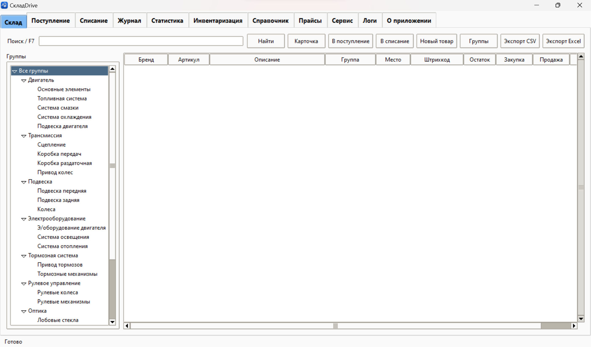

СкладDrive для Windows
Архив portable-версии программы. Справочник запчастей.
Скачать программуPortable-программа для Windows
Простой учет автозапчастей для небольших СТО, гаражных складов и мастеров: остатки, приход, списание, штрихкоды, прайсы поставщиков и понятная статистика.
Зачем это сделано
Многие складские системы перегружены бухгалтерией, заказ-нарядами, зарплатами и десятками лишних кнопок. СкладDrive сделан иначе: только склад запчастей, чтобы мастер мог быстро принять товар, списать установленную деталь и видеть реальные остатки.
Программа не требует установки. Ее удобно распаковать в любую папку, желательно которая синхронизируется с облаком, чтобы не потерять базу при поломке компьютера.
Лицензия 1 год - 500 ₽.
По вопросам получения лицензии, напишите на электронную почту.
skladdrive@mail.ruГалерея
Посмотрите основные разделы программы: склад, поступление, списание, статистику, инвентаризацию, справочник, прайсы и сервис.

Группы, поиск, остатки, закупка и продажа в основном складском разделе.
Файлы для загрузки
Архив portable-версии программы. Справочник запчастей.
Скачать программуПамятка по первому запуску, загрузке прайсов и работе со сканером.
Просмотреть инструкциюСписок версий, исправлений и заметок по обновлениям программы.
Просмотреть списокПросто установить программу и сразу сканировать все подряд не получится, как и в любой другой подобной программе: для работы со штрихкодами нужна наработанная база запчастей. Для быстрого старта, в архиве с программой есть подготовленный справочник запчастей, частично со штрих-кодами. Если сканера пока нет, можно начать работать с поиском по артикулу.
Как использовать
Запустите файл SkladDrive.exe и можно приступать к работе.
Откройте раздел “Справочник” и загрузите подготовленный файл spravochnik.xlsx
После можно импортировать прайсы поставщиков и дополнять базу новыми позициями.
Принимайте детали, списывайте только доступные позиции и проверяйте статистику.
Системные требования
Импорт справочника на процессоре AMD Ryzen AI 5 340 + ОЗУ/16 ГБ: 11 млн. строк около 8 мин. Размер справочника barcodes.sqlite после загрузки: около 9.5 ГБ. Объединение 30 прайсов: примерно 6 млн. строк меньше чем за минуту.
Для базы 9.5 ГБ лучше держать запас не меньше 30 ГБ: временные файлы SQLite, отчеты импорта, CSV/XLSX, резервные копии и архивы portable-сборки тоже занимают место.
Для очень больших выгрузок лучше использовать CSV. Лимит для XLSX всего около 1 048 576 строк на лист, поэтому базы на миллионы строк в один Excel-лист нормально не помещаются. Для просмотра больших CSV выгрузок, лучше использовать Notepad++
Возможности
Контакты